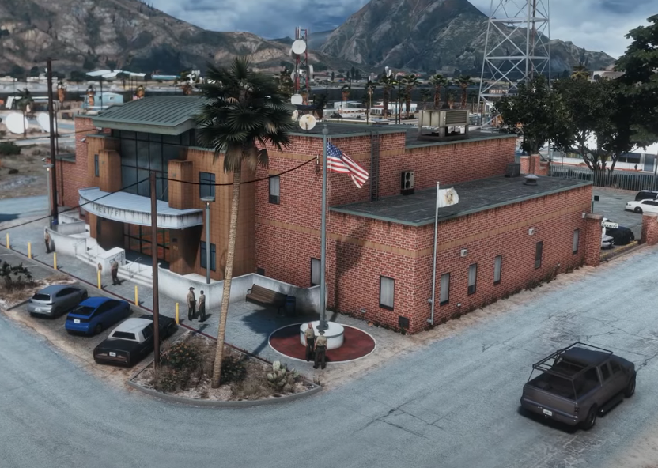
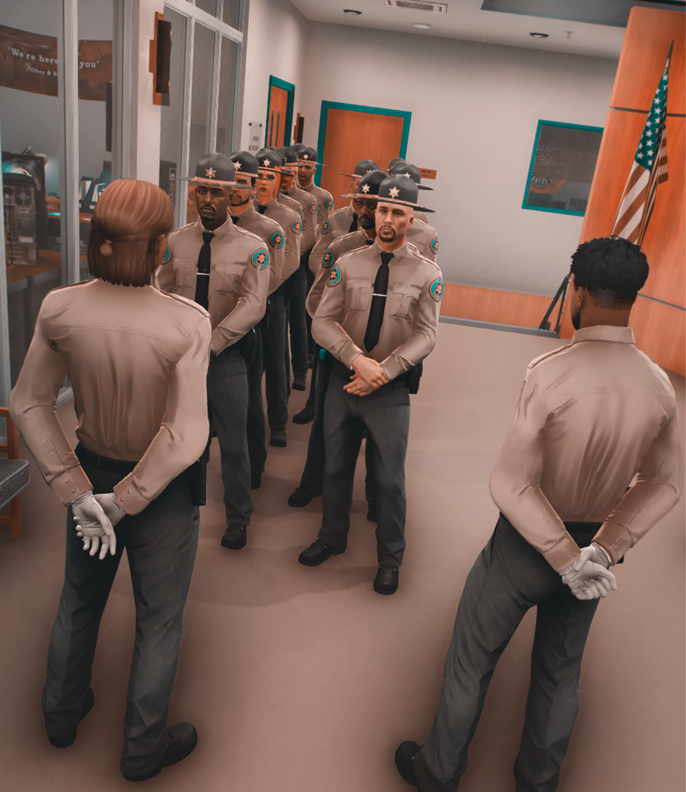
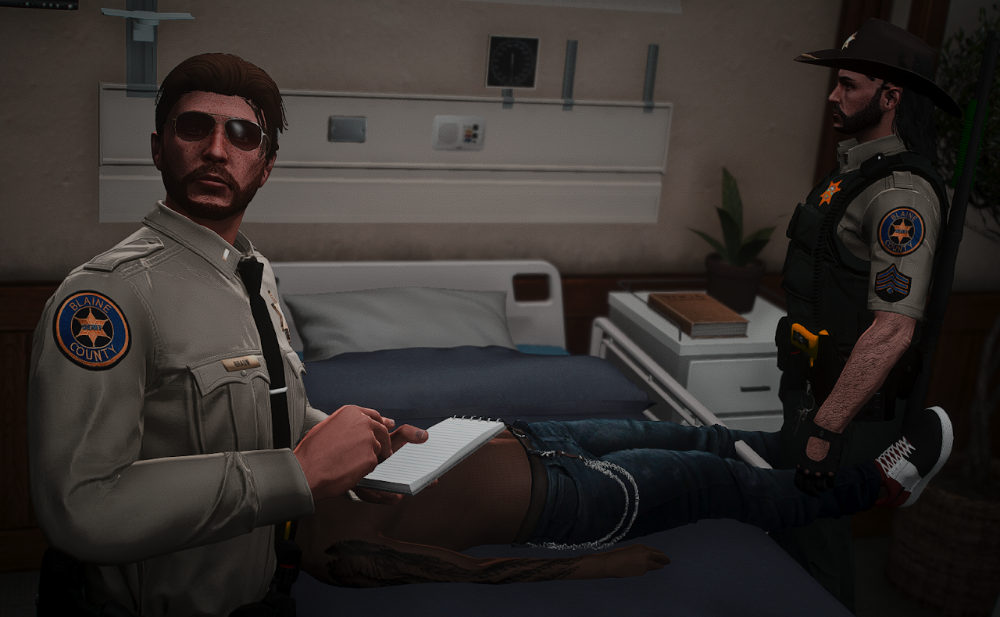

Instalaciones
Descubre las diferentes comisarías y instalaciones del departamento del Sheriff distribuidas por todo Los Santos County.
Explora nuestras instalaciones
Conoce los centros desde donde trabajamos para mantener la seguridad del condado.
Ver más

Agentes de la LSSD
Conoce a los hombres y mujeres que dedican su vida a proteger y servir a la comunidad de Los Santos.

Escala de rangos
Explora la estructura jerárquica y los diferentes rangos dentro del departamento del Sheriff.
Jerarquía departamental
Conoce los diferentes niveles y responsabilidades dentro del cuerpo.
Ver más

Divisiones y ramas
Descubre las diferentes unidades especializadas y divisiones que componen nuestro departamento.